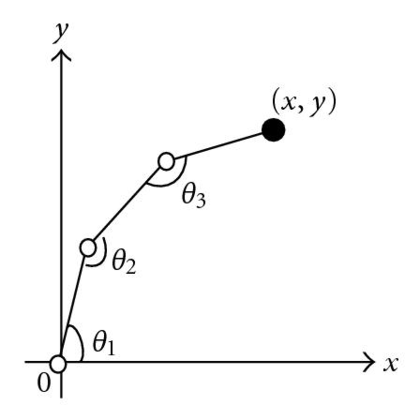
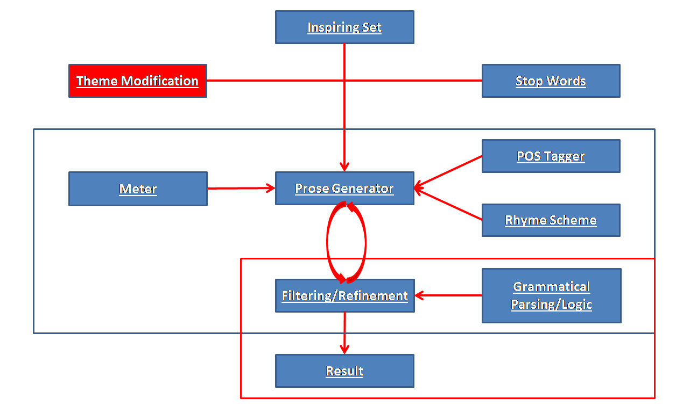

projects

The Arbiter
Response Evaluation for Conversations
One of the key ideas in our chatbot's design was having multiple text generators run in parallel after receiving user input, and choosing the most relevant response from that list of generated responses. The Arbiter, my method of response evaluation, increased our response relevance by ~15%, as well as uniting and reducing the current evaluation code by over 200%. The method compares features such as consistency, relevance, sentiment, intent, propriety, length, grammar, generator preference, context, personality, and repetition, in order to choose the most relevant response for this particular conversation.

Text Topic Classifier
For Intent Recognition
Our chatbot needed a way to recognize the topic that users were discussing without relying on keywords in the text itself (when people are asking about medical problems, they don't usually use language that's indicative of the topic, especially taking into account word sense disambiguation (i.e. 'My back hurts')).
I used Selenium and Beautiful Soup to scrape the popular question-answer website, Quora, to gather 200k question and topic pairs as training data. Then I compared both SVM and neural network approaches, and found a solution that achieved ~85% accuracy, despite running on sentences of less than 10 words.
Neural Style Transfer
Deep Learning Art
I used a pre-trained VGG-19 model, computed the content and style costs, and then optimized between them. The result is a blend of the content of the first picture, and the style of the second.
try it for yourself
Carl
Winning IEEE CIG 2017 Text-based Adventure Competition in 2017
To address state space disambiguation, Carl categorizes each of the skip-thought vectors of each new sentence based on its proximity to a set of pre-defined example sentences. This allows Carl to roughly keep track of actual locations, as opposed to falsely identifying action feedback as location information. Carl also uses word2vec operations to determine priority for object manipulation. In a high-dimensional embedding space, the vector of a noun is projected onto the vector defining the distance between two words that express opposing ideas ('tree' and 'forest' represent 'more manipulable' vs. 'less manipulable'). This allows Carl to get a rough approximation of which nouns in his vicinity are able to be picked up or acted on (i.e. 'A sword hangs on the mantle before you.'), as opposed to just being flavor text (i.e. 'You see mountains in the distance.').
see the announcementUnderstanding Proboscideas
Classifying Elephant Utterances
Using vocalizations created by wild African elephants in Sri Lanka between 2006 and 2007 (from the LDC), I used the spectrograms and the mel-frequency cepstrum coefficients to train a model that classsified vocalization into 14 different categories of growls, roars, and chirps.
Doug
Winning IEEE CIG 2017 Text-based Adventure Competition in 2016
Doug uses one-shot learning to navigate the environment. During play, he extracts nouns from game text and attempts to apply verbs in a reasonable way (using vector embeddings generated by Tomas Mikolov's word2vec). In word2vec's high-dimensional embedding space, each word is represented as an n-dimensional vector, with words that appear in similar contexts having similar vectors. Doug performs a set of mathematical operations in order to identify which verbs 'match' a given noun, and uses that to generate action text (short commands like 'open door', 'kill troll with sword', etc.).
see the announcement see the code
Autoplay
A Learning Environment for Interactive Fiction
Inspired by the Arcade Learning Environment, I built Autoplay to streamline reinforcement learning in text-based environments. Included were 50 games, including the well-known Zork series. Autoplay quickly became a standard for text-based research, and we helped other colleges set up Autoplay in their own labs (including the team that created Golovin). This continued until Microsoft came out with TextWorld in the summer of 2018, which added the ability to create games of varying size and complexity. They cited us though, so no hard feelings.
see the codeAutomated OCR Pipeline
Digitizing Historical Documents
I used Bill Lund's ensemble OCR method (which combines results from Abbyy FineReader, OmniPage Pro, Adobe Acrobat Pro, and Tesseract) to create an automated pipeline through which scanned images of historical documents can be digitized into searchable text, which reduced the average required time by over 75%.

The Robot Arm
Solving 3D Inverse Kinematics
I used the Jacobian transpose method to move a series of joints to a particular point (by finding settings for the revolute joint angles).
see it in action
Person Identification Through Motion
Using Accelerometer Data
We collected accelerometer information (using Yei 3-Space Sensors) from participants while they shot free throws on a basketball court. Using Weka, we found that we can definitively identify individuals using movement data.

ALVIN
The Parody Engine
We created a system that will take input lyrics or prose and, using natural language parsers, word2vec, and the Google n-gram collection, generate a parody that matches in meter and rhythm.